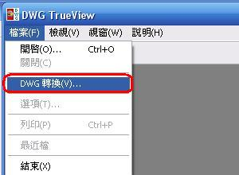
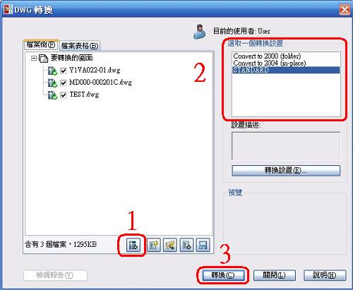
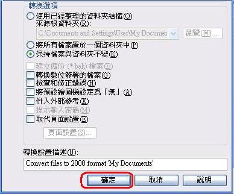
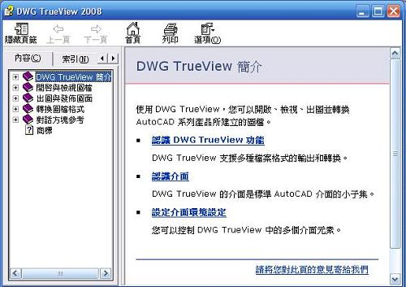

【步驟三】按下方第一個按鈕「加入檔案…」，選擇要轉檔的圖檔，在視窗右側選擇要轉成2000、2004或是STANDARD，STANDARD預設是轉成2007的格式，最後按「轉換」按鈕即可。
※ 補充說明：請注意預設的存檔方式不同，選擇轉成2000預設會把轉換後的圖檔放到新的資料夾內，轉成2004預設會覆蓋原始檔案，選擇STANDARD預設會存成ZIP檔案，您可以點選「轉換設置」按鈕進行修改或新增轉檔設定。

※ 補充資訊：
1.在「檔案表格」內可以檢視原始圖檔的版本為何。

2.「轉換設置」可以新增或修改轉換內容的設定。

3.「轉換設置」內容如下圖，可以設定轉換的類型、格式、存檔的資料夾和其他功能設定。


4. 如果對於DWG TrueView的功能、支援性和操作有疑問，可以點選「說明」參考相關資訊。
